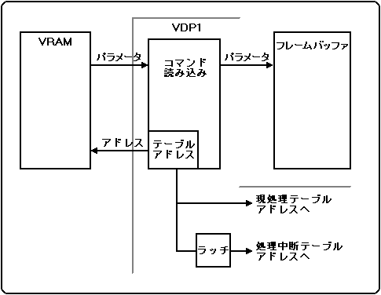

★HARDWARE Manual
★VDP1ユーザーズマニュアル
★HARDWARE Manual
★VDP1ユーザーズマニュアル
▲戻る｜
進む▼
VDP1ユーザーズマニュアル/第４章 システムレジスタ
■4.7 処理中断テーブルアドレスレジスタ
- 処理中断テーブルアドレスレジスタ(LOPR、Last operation command address register)は前フレームの最後に処理されたコマンドテーブルアドレスを表します。読み出し専用の16bitのレジスタで、100012H番地にあります。
LOPR
100012H
(R) |
bit15 | bit14 | bit13 | bit12 | bit11 | bit10 | bit９ | bit８ |
bit７ | bit６ | bit５ | bit４ | bit３ | bit２ | bit１ | bit０ |
|---|
| 処理中断テーブルアドレス／8H | 0 | 0 |
- 処理中断テーブルアドレス: bit15〜0
- フレームバッファ切り替え時に、VRAMからVDP1にパラメタを取り込んでいたコマンドテーブルのアドレスを8Hで割った値が、このレジスタに書き込まれます。
- このレジスタはフレームバッファの切り替え時に更新されるので、前フレームの最終処理コマンドテーブルアドレスを知ることができます。
- コマンドテーブルアドレスのバウンダリは20HByteなので、レジスタの下位2ビットは00Bに固定されます。
図4.3 処理中断と現処理テーブルアドレス

▲戻る｜
進む▼
★HARDWARE Manual
★VDP1ユーザーズマニュアル
Copyright SEGA ENTERPRISES, LTD., 1997